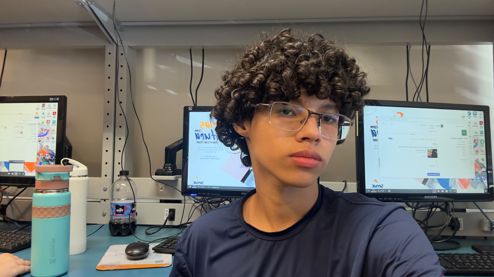

(19) 00000-0000
calebe.cymely@gmail.com
R. Dr. Angelino Sanches, 800 - Vila Sao Pedro,
Americana - SP, 13466-490 (Senac)
30 de Junho de 2010
Sou estudante de informática e empreendedor. Ao longo da minha trajetória, tenho me dedicado ao aprendizado contínuo e à criação de soluções inovadoras. Acredito que a persistência, a ética e o compromisso com a excelência são fundamentais para alcançar os melhores resultados em cada projeto.